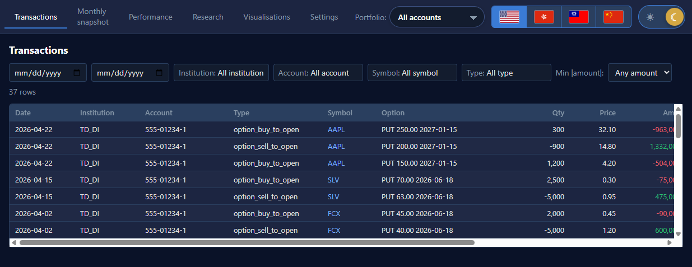
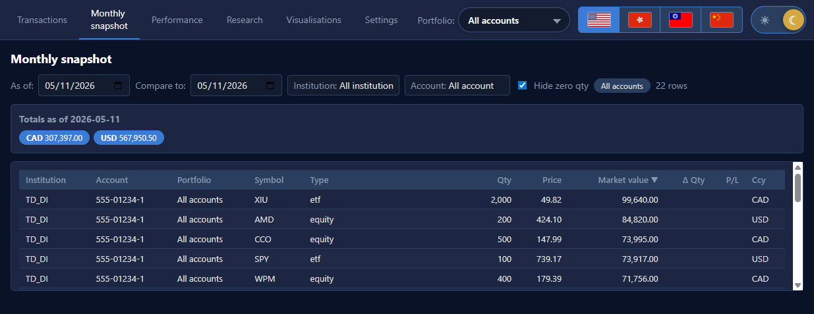

Trade History — Documentation
Generated from the focused Markdown sources under spec/ —
chanmainvest/trade_history.
Trade History — User Guide
A personal investment tracker for Canadian retail brokers. Imports your monthly PDF statements from CIBC, HSBC, RBC, and TD, joins them against free market data, and gives you a single dashboard for your whole family's accounts.
This guide is written for humans. Technical context starts at INDEX.md, while coding-agent rules live in AGENTS.md.
Current data-quality notice (2026-07-16): the GUI is operational and source ingestion preserves the prior active extraction if parsing or staging fails. Parser v2 fixes the audited RBC dual-currency and TD bundled layouts, and the CLI now persists month-end reconciliation results. A non-live shadow rebuild and comparison report exist, but the live ledger has not been cut over. Verify and Monthly display read-only quality states when v6 facts are present; historical live rows can still be unavailable. Review CURRENT-STATE.md before relying on totals as reconciled.
1. Install
# clone, then from the repo root:
uv sync --all-extras --dev
cd frontend ; npm install ; cd ..
Requirements:
- Python 3.12 or later.
- Node.js 20 or later.
- Windows or macOS; Linux works but is not the target.
2. Start the app
Two terminals.
Terminal 1 — backend (default profile uses your real statements):
uv run ledger serve --host 127.0.0.1 --port 8000
The API binds to http://127.0.0.1:8000. Auto-reloads on file change.
Terminal 2 — frontend:
cd frontend
npm run dev -- --host 127.0.0.1 --port 5175 --strictPort
Open http://127.0.0.1:5175. The Vite dev server proxies /api to port 8000.
Do not trust a default port on a shared machine; confirm /openapi.json reports
Trade History API.
2.1 Docker start
If you have Docker Desktop installed, one command starts both containers:
docker compose up --build
Open http://localhost:5173. The frontend is a production Vite build served by
nginx; /api/* is proxied to the FastAPI backend container. Your local
data/, logs/, and Statements/ folders are mounted into the backend, so the
same database and PDFs are used.
2.2 Try the example dataset first
If you don't have your own statements handy:
$env:LEDGER_PROFILE = "example"
uv run python scripts/build_example_data.py
uv run ledger serve
# in another terminal:
$env:LEDGER_PROFILE = "example" # so the API picks up the example DB
cd frontend ; npm run dev
The example dataset has two accounts (TD Direct Investing and Interactive
Brokers) with a current holdings snapshot mirroring the
portfolio_dashboard/sample_portfolio.xlsx reference, plus ~37
invented buy/sell/option events spread over 2021-2026. Option transaction
quantities are contracts, not underlying shares. The builder also seeds an
example DuckDB with market prices, FX rates, and sector/profile metadata for
the sample symbols so Research, Performance, Correlation, and Treemap work
without using your real database.
Example-data screenshots:


Reset back to your real data with $env:LEDGER_PROFILE = "real" or
just close the terminal.
3. Load your statements
- Drop your PDFs into
Statements/<institution>/following the convention inconfig.INSTITUTIONS. Folders that don't exist are skipped, so you can start with just one broker. - Ingest:
uv run ledger ingest run
Re-running is fast when the active extraction matches the PDF SHA-256,
parser version, parser contract/schema version, and reviewed identity data.
Parser or reviewed-alias changes reparse automatically; --force is only
needed when you deliberately want to bypass that cache. Each PDF activates
as one unit, so a parser/validation/write failure keeps its previous active
output. For an existing ledger, build a non-live shadow and review it before
relying on totals or considering a cutover:
uv run ledger shadow build
Before ingesting, you can run the same parsers and contract checks without opening SQLite:
uv run ledger audit extraction --statements-dir Statements
The command writes logs/extraction_audit.jsonl. Add
--fail-on-errors when using it as a gate.
-
Pull market data for everything you hold:
uv run ledger market refreshThis calls yfinance and, for US-listed fundamentals, the free SEC EDGAR Company Facts API. Be patient and don't run it on a flaky link. Refresh replaces/upserts the relevant public market rows by symbol/date.
To fetch sector/profile metadata used by Visualization colors, run:
uv run ledger market refresh-profilesuv run ledger market refresh-allincludes profiles, prices, dividends, splits, financials, earnings, and FX in one pass. -
(Optional but recommended) Back-fill positions that pre-date your earliest statement:
uv run ledger ingest infer-initialsThis populates
initial_positionsandinitial_cashso the Monthly / Performance views know what you were already holding when our records start. Idempotent. Inferred rows are tagged withnotes = 'inferred:...'; any reviewed/manual rows with a different note prefix are preserved on re-run. Cash rows are inferred from the first monthly cash snapshot for each account/currency. -
(Optional, legacy data only) Repair already-ingested historical symbols without deleting PDFs or re-ingesting everything. New ingestion resolves only explicit/reviewed identities while staging and does not run this broad mutation pass automatically. The legacy repair uses known ticker mappings and holding matches, so review its results before relying on them:
uv run ledger ingest repair-symbols -
(Optional after manual DB edits) Rebuild automatic transfer links, position-to-transaction links, and reconciliation results:
uv run ledger ingest reconcileNormal
ingest runperforms this after active source activation; the command is mainly for manual maintenance. It stores expected-versus-reported position, cash, and printed-total equations, including incomplete inputs and unexplained residuals. It does not alter a reported transaction or create a balancing entry. -
Reload the browser. The Transactions tab should now have data.
4. The tabs
4.1 Transactions
Every event the parser produced, filterable by:
- Institution (multi-select with search).
- Account (multi-select with search; respects the active portfolio).
- Symbol (multi-select with search; scrolls inside max 2/3 screen height).
- Type (buy / sell / dividend / option_… etc., multi-select).
- Min |amount| — 100 / 1k / 10k / 100k / 1M presets.
- Date range.
Click a symbol cell to jump to the Research tab. Opening holdings inferred or reviewed before the first complete statement are shown as Initial position rows; they are read-only anchors, not fabricated transactions. When source icons are enabled, a transaction icon opens Verify extraction on that exact row. Initial positions have no icon because they do not claim a source row that was never extracted.
4.2 Monthly snapshot
Default view: holdings as of the most recent statement date in the database, across all accounts in the active portfolio.
- As of date — pick any day; the app starts from the latest explicitly complete account/currency holdings checkpoint and replays transactions after it. A complete empty scope clears only that scope; a partial/unknown scope never clears an earlier complete checkpoint. Before the first snapshot, it uses inferred/manual initial holdings.
- Compare to — picking a second date adds a
Δcolumn. Rows where the position grew are tinted green, rows that shrank are tinted red, in git-diff style. Positions that disappeared between the two dates appear at the bottom. - Sync compare to as of — copies the current As of date into the comparison date when you want to reset the diff.
- Cash positions appear as
CAD Cash/USD Cashrows per account. Totals show native currency buckets plus combined CAD and USD totals using the latest FX rate on or before the snapshot date. The displayed FX chips state both the rate and its date; native-currency buckets remain the primary total. - Columns are sortable; institution and account are visible, while the active portfolio is controlled by the top-bar dropdown instead of a repeated table column. Ticker symbols link to Research.
- When source icons are enabled, each sourced row opens Verify extraction on the exact position/cash row. Reconstructed rows link to their checkpoint and say so in the tooltip.
- Every current holding shows its checkpoint date and whether it is reported, reconstructed, or incomplete. The quality cell also shows its reconciliation result and warns about incomplete scopes, reconciliation issues, and stale or missing prices. These flags describe uncertainty; they never add a balancing transaction or guess a value.
4.3 Performance
Total portfolio value over time, including cash.
- Period buttons: 1m / 3m / 6m / 1y / 3y / 5y / 10y / max / custom.
- Currency: CAD / USD / Both.
- Show as % — rebases all series to 100 at the start of the window; forced on if "Hide $ values" is set in Settings.
- Portfolio / institution / account filters (multi-select).
- The separate cash chart remains available as a cash-only breakdown and toggles off automatically when "Hide $ values" is on.
The chart keeps CAD and USD as separate native-currency series; it does not add
them together. It evaluates the same complete-scoped holdings rules as Monthly
and Visualisations. An account carries its most recent trusted state forward
for at most 90 days; older state is omitted as stale instead of remaining in
the current portfolio forever. Parser v2 can emit complete scopes
for recognized sections; existing active/live v1 rows remain conservatively
unknown, so they may carry an old holding forward until a reviewed re-ingest
or shadow rebuild. The Monthly quality cell and Verify-extraction tab expose
the same read-only scope/reconciliation state. See
RECONCILIATION.md.
4.4 Research
Per-symbol deep dive.
- Type a ticker, press Enter (no Go button — it was useless). When the search box is empty it lists known tickers; typing narrows the list by ticker, asset type, or currency. The list scrolls at a max 2/3 viewport height so it stays usable on smaller screens.
- Period buttons + daily/weekly/monthly resample.
- Candlestick with MA50 / MA200 toggles, volume sub-chart. Moving averages are calculated from the full fetched history before the selected display period is clipped, so MA200 remains visible on shorter views when enough prior observations exist.
- Your buy/sell marks overlay the chart. Solid triangles = equity / ETF trades, hollow triangles = option trades, so you can tell them apart at a glance.
- Financials chart underneath — quarterly or annual, per-metric show/hide. yfinance data is extended with SEC EDGAR Company Facts for US-listed symbols when available.
- Trade history table at the bottom lists every transaction the app has for this symbol, including account / description.
4.5 Visualisations
Three views, all filtered by the active portfolio, with institution and account filters inside the tab:
- RRG (Relative Rotation Graph) — animated, with adjustable trail. Symbols in the same sector use related colors when profile metadata is available. Use the checkbox row below the chart to hide individual symbols.
- Treemap — holdings sized by market value. Use Group by to switch between institution/account, type, and sector. Use Performance to pick the period used for green/red coloring on the holding tiles. Defaults to the latest snapshot date (so it's never blank unless you actually have no holdings).
- Correlation matrix — square heatmap using the same color scale as
portfolio_dashboard. Sort-by dropdown, top/left ticker labels, or cells can reorder both axes by correlation against a symbol; checkboxes hide/show individual symbols and use sector-colored accents.
4.6 Verify extraction
Visually double-check that the parser extracted each statement correctly. The screen has two sides:
- Left renders the actual PDF (via PDF.js), with a box drawn over every text line that a parsed item came from. Boxes are colored by state: green = a matched line and amber = the currently selected exact item.
- Right begins with a quality summary: active parser/run versions and status, completeness of every currency/section scope, and the position, cash, and statement-total reconciliation outcomes. It then lists parsed Transactions, Positions, Cash, Summary totals, and Quarantine rows.
Click a box on the left to highlight its item on the right; click an item on the right to highlight its box(es) on the left and scroll the PDF to the first match. Items with no matching PDF line are dimmed and marked with a dot.
Pick which statement to view with the dropdown filters — Date, Institution, and Account — which narrow the statement list. The list defaults to the latest statement. Prev / next chevron buttons next to the date step through statements within the current filtered set (prev = older, next = newer).
Use the Unresolved, Incomplete, and Unreconciled checkboxes to limit the picker to statements with a quarantined/unresolved identity, a partial or missing scope/input, or an unexplained residual. Cash and summary total rows use their persisted source evidence for PDF boxes when that evidence exists. A dimmed dot means the row has no defensible matching text line; it is not a zero or a fabricated source location.
4.7 Settings
The Settings tab manages portfolios — named groups of accounts. Example:
- Dad's TFSA → CIBC TFSA only.
- Kids' RESPs → TD WB only.
- Household → all accounts (the default
allportfolio).
Add, edit, or delete portfolios here; the dropdown in the top bar activates one across every tab. The Show source icons preference controls the Verify links in Transactions and Monthly.
Theme, language, and hide-$ live in the top bar, not on this tab:
- Theme — light / dark (sun/moon toggle).
- Language — English / 繁體 (HK) / 繁體 (TW) / 简体 (CN) (flag picker).
- Hide $ values —
$toggle; show percentages only (useful for screenshots).
Updating the database (ingesting statements, reconciling transfers, repairing symbols) is CLI-only — see §5.
5. Updating the database (CLI only)
The web app is read-only — it never writes to the database. All ingestion
and maintenance happens through the ledger CLI (or, for AI agents, the
MCP server's allowlisted CLI commands):
# ingest every PDF under Statements/<Institution>/
uv run ledger ingest run
# infer opening holdings before the first statement
uv run ledger ingest infer-initials
# rebuild transfer counterpart, movement links, and reconciliation results after manual edits
uv run ledger ingest reconcile
# repair symbols (resolve aliases, fund-code lookups, etc.)
uv run ledger ingest repair-symbols
# rebuild a non-live ledger twice, preserve reviewed state, and write a comparison report
uv run ledger shadow build
ingest run performs conservative staged identity resolution and reconciliation
after source activation. repair-symbols is for legacy/manual data; the
reconcile command is mainly needed after manual DB edits.
shadow build does not replace the active database. Review its local report
and source PDFs first; only a human may record shadow sign-off and later run
the separately guarded shadow cutover command after stopping the backend.
To visually verify how a statement was extracted, use the Verify-extraction tab (§4.6) — it renders the PDF and draws boxes over the lines each parsed item came from. The HTTP endpoints backing that tab are read-only:
| Endpoint | What it does |
|---|---|
GET /statements |
Statement picker rows for the Verify-extraction tab. |
GET /statements/{id}/pdf |
Serve the raw PDF for a statement (read-only). |
GET /statements/{id}/boxes |
Per-page line bounding boxes with matched parsed-item refs. |
6. MCP server for AI agents
Run the Ledger MCP server over stdio:
uv run ledger mcp serve
Use that command in any MCP-capable AI client. A typical server entry looks like this, with the working directory set to the repo root:
{
"servers": {
"ledger": {
"type": "stdio",
"command": "uv",
"args": ["run", "ledger", "mcp", "serve"],
"env": { "LEDGER_PROFILE": "real" }
}
}
}
The server provides tools for frontend routes/config, allowlisted API GET requests, and bounded CLI actions such as ingest, symbol repair, initial-position inference, reconciliation rebuilds, and market-data refresh. It intentionally does not offer arbitrary shell access.
7. Troubleshooting
| Symptom | Cause | Fix |
|---|---|---|
Vite crashes with Failed to resolve on Windows |
Vite realpath'd the workspace onto another drive | Already fixed via resolve.preserveSymlinks: true in frontend/vite.config.ts |
| Treemap is blank | Picked a date with no snapshot | Pick a date ≥ your earliest statement; the API falls back to the latest available |
| Performance chart drops to zero | Holdings were sold, filtered, or omitted by a checkpoint explicitly marked complete | Check Verify/current-state warnings; broaden filters, or pass forward_fill=false to /api/performance/total for raw sums |
BOUGHT appears as a symbol in RBC rows |
Pre-fix bug | Run uv run ledger ingest repair-symbols or re-ingest after pulling. The parser now strips leading verbs and applies a small name-to-ticker map (e.g. iShares 20+ → TLT) |
Empty option symbol on a CIBC option_expiration row |
Pre-fix bug | Run uv run ledger ingest repair-symbols or re-ingest. The parser now recognizes CALL ROOT MON DD YYYY STRIKE shapes |
8. Data privacy
- The app does not upload SQLite or source PDFs. Market refresh sends ticker symbols to yfinance and, for eligible fundamentals, SEC endpoints.
- The DuckDB market DB contains only public market data and is safe to share or commit.
- The browser app talks only to
127.0.0.1by default. - No telemetry. No analytics. No third-party fonts loaded from the CDN.
9. Where to learn more
- INDEX.md — route to the focused technical specification.
- CURRENT-STATE.md — dated measurements and known defects.
- AGENTS.md — rules for AI agents editing this repo.
- example_data/README.md — what's in the synthetic dataset and how to rebuild it.
Specification index
This directory is the on-demand context library for Trade History. Read this page first, then open only the owner document for the subsystem being changed.
Authority and status
The documents describe the currently implemented system unless a section is explicitly labeled Target. When sources disagree, use this order:
- executable schema and code;
- tests that exercise the behavior;
- the focused owner specification;
README.mdand the user guide;- generated
docs/index.html.
src/ledger/db/schema.sql is the exact SQLite DDL. The DDL string in
src/ledger/db/duckdb_store.py is the exact DuckDB DDL. The implementation
plan is not evidence that a target behavior already exists.
Context router
| Question or change | Load |
|---|---|
| What works, what is measured, what is broken? | CURRENT-STATE.md |
| Where are the system boundaries and packages? | ARCHITECTURE.md |
| What is persisted? | DATA-MODEL.md |
| How does a PDF become ledger rows? | INGESTION.md |
| What must a parser emit? | PARSER-CONTRACT.md |
| How are movements, checkpoints, and views related? | RECONCILIATION.md |
| Which HTTP routes and tabs exist? | API-UI.md |
| How are profiles, commands, servers, and releases run? | OPERATIONS.md |
| How does a person use the app? | USER-GUIDE.md |
| Which lessons apply to several parsers? | EXTRACTION-CORNER-CASES.md |
Institution-specific extraction context:
Fact ownership
Keep each contract in one place. Architecture owns the system map, data model owns persistence, ingestion owns activation semantics, parser contract owns emitted types and evidence, reconciliation owns formulas, API/UI owns routes and consumers, and operations owns commands. Other documents should link to the owner rather than copy it.
When implementation changes, update the owner spec in the same change. Update
CURRENT-STATE.md only from a new measured audit, and regenerate
docs/index.html after any source-spec change.
Current state
Implementation review: 2026-07-17. The live-ledger counts below remain a dated diagnostic snapshot from 2026-07-12, not a release promise. Parser v2 and the reconciliation engine were validated in fixtures and read-only corpus audits on 2026-07-14. A new parser-v2 shadow ledger has been built and compared, but the live SQLite ledger has not been re-ingested, changed, or cut over to it.
Product surface
- The FastAPI backend and React GUI build and run.
- The GUI has Transactions, Monthly, Performance, Research, Visualisations, Verify extraction, and Settings tabs.
- Statement/PDF review endpoints are read-only. Preferences are written to
data/config.json; ledger mutation is CLI-only. - Ingestion stages one validated PDF source in a savepoint and activates it atomically. A failed parse, validation, staged write, or explicit skip keeps the prior active extraction.
- CIBC and RBC report parser version
2.2.0, HSBC reports2.1.0, and TD reports2.1.0. They retain source page/line evidence, available word/box geometry, explicit snapshot scopes, and quarantine rather than fabricate unsupported values. - Monthly, Performance, and Visualisations now consume one read-only scoped holdings service. Monthly renders checkpoint/provenance, reported versus reconstructed/incomplete state, reconciliation, and stale/unpriced quality fields without mutating the ledger.
- Verify extraction now reads active parser/run metadata, scope completeness, position/cash/statement-total reconciliation results, and source-linked cash and summary-total rows. Its unresolved/incomplete/unreconciled filters are read-only. Legacy rows without v6 facts are shown as unavailable, not complete.
- Transactions exposes initial-position anchors separately from broker events. Transactions and Monthly can deep-link exact source rows into Verify; the preference is controlled in Settings. Monthly no longer repeats a portfolio column, and its tickers link to Research.
- The CLI now has a guarded shadow build/compare/sign-off/cutover/rollback workflow. Building a shadow never changes the live ledger; cutover requires a signed local review report, a stopped backend acknowledgement, and an exact live-filename confirmation.
Validation and corpus audits
- The committed synthetic-fixture suite covers 11 files. Its extraction audit emits 17 statements with zero duplicate keys, zero contract errors, zero calculable cash residuals, and zero calculable position residuals. One annual RBC fixture is intentionally unclaimed because the generic fixture folder is not a production broker folder.
- The 324 stored text dumps produced 323 valid parses and one explicit tax document skip; there were zero invalid, unclaimed, or failed files, zero contract errors/warnings, and zero duplicate statement keys. The audit still reports 287 unbalanced calculable cash checks, 196 incomplete cash checks, and 574 unbalanced position intervals: these are unresolved quality findings, not hidden adjustments.
- All 338 source PDFs produced 337 valid parses and one explicit tax document skip; there were zero invalid, unclaimed, or failed files, zero contract errors/warnings, and zero duplicate statement keys. The read-only parser audit reports 298 unbalanced calculable cash checks, 205 incomplete cash checks, and 588 unbalanced position intervals. The reconciliation engine now persists equivalent scoped outcomes when the ledger is ingested or rebuilt; these audit counts are not a rerun against the dated live database.
- Reconciliation regressions cover persisted position components and residuals, cash settlement dates across statement ownership, adjacent cash continuity, position and portfolio totals, incomplete scopes, idempotent rebuilding, and a TD bundled-period golden fixture with no unexplained cash or position result.
- The normal structural checks are run before a phase is completed: Python tests, Ruff, the frontend production build, and generated-docs build/check.
- On 2026-07-15,
ledger shadow buildparsed all 338 source PDFs twice intodata/ledger.vnext.sqlite; both target content fingerprints matched and the before/after PDF manifest matched. The shadow contains 548 statements, 757 canonical instruments, 3,382 transactions, 7,955 position snapshots, 625 cash balances, and 9,789 reconciliation results. Its redacted comparison report is pending human source spot-check/sign-off; no cutover occurred. - On 2026-07-17, a disposable post-repair shadow parsed the same 338 PDFs with
CIBC/RBC
2.2.0, HSBC2.1.0, and TD2.1.0. The PDF manifest was identical before/after. It contains 548 statements, 657 instruments, 3,387 transactions, 6,665 position snapshots, 625 cash balances, 120 initial positions, and 8,485 reconciliation results. Its referenced-symbol audit has 286 instrument/currency identities, zero reserved/invalid symbols, zeroTO/FROMinstruments, zero negative reported non-option positions, and zero reversed-sign equity buys/sells. This disposable build did not request the two-build reproducibility check and was not signed off or cut over.
Measured live ledger (2026-07-12)
| Item | Count |
|---|---|
| source files | 338 |
| statements | 444 |
| accounts | 20 |
| instruments | 33,018 |
| transactions | 2,988 |
| position snapshots | 6,203 |
| cash balances | 459 |
| initial positions | 3,339 |
| initial cash rows | 13 |
| quarantine rows | 5,527 |
| annual performance rows | 5 |
| account links | 7 |
| position/transaction links | 483 |
Implemented parser repairs; shadow review pending
- RBC CAD/USD retention is fixed for parser v2. One monthly physical account/period now contains native CAD and USD child scopes; the committed fixture and both full audits emit no duplicate statement identities. Existing active rows were produced earlier and remain unchanged. The new shadow has 92 monthly RBC statements and 3 annual RBC reports; the legacy database had 91 and 6 respectively, so the annual-report difference remains a manual review item rather than an automatic cutover decision.
- TD bundled-period splitting is fixed for parser v2. Full and legacy period headers split before account scopes, and repeated account fragments merge into one logical statement. The full audits report no duplicate keys or contract date violations; rows outside a statement period are quarantined until a pending-transaction model exists.
- No parser v2 numeric fallback turns a failed parse into zero. Invalid quantities, closing balances, incomplete option contracts, and unmodelled activity rows are evidence-linked quarantine items. Historical live rows may still contain the old parser output.
- New parser output has scoped evidence. Recognized holdings sections and
cash sections with a valid printed close can be
complete; unrecognized or incomplete sections remainunknown. Text-only extraction supplies stable page/line evidence, andpdfplumberextraction supplies available coordinates/words. - Unresolved printed names no longer become tickers. CIBC account-transfer
direction tokens (
TO/FROM) have no instrument, name-only identities must resolve through reviewed/exact evidence before persistence, and unresolved positions are quarantined with a non-clearing scope. HSBC column headers can no longer becomeCAD/USDholdings. - Derived same-period statements are canonicalized. Duplicate/reissued PDFs remain verifiable, while initials, holdings, transaction lists, transfer pairing, and reconciliation use the latest persisted revision once.
- Holdings and performance have bounded state. Complete checkpoint omission cannot revive an obsolete initial position, and Performance stops carrying an account after 90 days without a checkpoint. CAD/USD remain separate native series.
Confirmed remaining correctness work
- The dated live ledger still has broken historical instrument identity. Schema v6 gives new/migrated rows one canonical key, but the 2026-07-12 live snapshot is not the shadow target. It contains 803 duplicate logical groups, 31,567 excess IDs, and 28,587 unreferenced instrument rows.
- The reconciliation engine is implemented, but the dated live ledger has
not been rebuilt with it.
ledger ingest reconcilenow stores source-traceable position, cash, and printed-total equations. This phase did not mutate the live database. The GUI can surface results when they exist, but legacy live rows have no v6 reconciliation facts yet. - Full-corpus cash and position residuals remain material. The parser audit and shadow reconciliation expose them without fabricating balancing rows. The largest residuals and the RBC annual-report count difference still need source spot-checks before a human can sign off or cut over.
- The holdings engine is shared, but live data quality is still historical. Monthly, Performance, and Visualisations now use canonical identity, complete scopes, normalized movements, and explicit stale/unpriced status. The dated live ledger has not been re-ingested or reconciled with parser v2, so visible quality states remain historical/unavailable until review and cutover.
- Live scopes/provenance are historical. Parser v2 can produce complete scope and coordinate-aware evidence, but currently active v1-derived rows remain conservative/legacy until an approved re-ingest and shadow rebuild.
Operational and documentation limits
ingestion_attempts.jsonl,quarantine.jsonl, andskipped_pdfs.logare regenerated indexes without raw statement text. Historical local log files may still need cleanup.- Cache validity includes source hash, parser version, parser contract, schema, and reviewed-identity resolver state. The v2 parser bump makes v1 active output stale for a reviewed re-ingest.
- The GUI quality surface is implemented read-only. Shadow build/cutover tooling is implemented, but review sign-off and cutover have intentionally not occurred.
Architecture
This page is the concise system map. Detailed contracts live in the focused specifications linked from INDEX.md.
System boundary
read-only PDFs under Statements/
|
v
pdfplumber -> pypdf fallback -> institution parser -> SQLite ledger
|
yfinance + SEC Company Facts ---------------------> DuckDB market data
|
FastAPI read/query layer
|
React/Vite GUI
Statement ingestion, symbol repair, initial inference, and reconciliation are
CLI operations. The HTTP statement routes only list/serve existing statements
and extraction boxes. PUT /config writes user preferences to JSON; it does
not mutate the ledger.
Runtime packages
src/ledger/
config.py workspace paths and institution folders
cli.py Click command tree
pdf_text.py raw PDF text, optional word/line geometry, fingerprinting
quantity.py transaction-type quantity movement rules
holdings.py canonical read-only scoped holdings reconstruction
shadow.py read-only source export, staged rebuild, compare, guarded cutover
db/
schema.sql canonical SQLite DDL
sqlite.py connections, initialization, upserts
duckdb_store.py canonical market-data DDL
parsers/ common types, layout/provenance bridge, four bank parsers
ingest/
pipeline.py discovery, validate, staged source activation, audit export
identity_resolution.py conservative in-stage printed/alias/holding resolution
repair_symbols.py legacy/manual post-parse identity repair
fund_lookup.py reviewed fund-code lookup workflow
initials.py inferred pre-history anchors
reconcile.py transfer pairing, movement links, and scoped checkpoint equations
market/ prices, actions, profiles, financials, FX
api/
app.py FastAPI application and route registration
routes/ transactions/monthly/performance/research/viz/config/statements
frontend/src/
App.tsx tab routing and global controls
portfolio.tsx preferences and account portfolios
tabs/ seven current screens
There is no src/ledger/analytics/ package. Analytics queries currently live
inside the API route modules.
Storage split
- SQLite (
<DATA_DIR>/ledger.sqlite) contains private account, statement, transaction, checkpoint, quarantine, reconciliation-link, and reconciliation-result data. - DuckDB (
<DATA_DIR>/market.duckdb) contains replaceable public price, corporate-action, profile, financial, earnings, and FX data. data/config.jsoncontains UI preferences and named account portfolios.Statements/is immutable input.logs/and text dumps are derived local artifacts.
See DATA-MODEL.md for persisted contracts.
Core invariants
- Preserve native currency in the ledger; convert only for a requested view.
- Treat a proven-complete broker snapshot as a quantity/cash checkpoint.
- Keep transactions as movements/audit evidence, not as a substitute for a missing checkpoint.
- Preserve uncertainty instead of manufacturing values.
- Keep every derived row traceable to its source statement.
The current implementation violates parts of the last three invariants. Those violations are enumerated in CURRENT-STATE.md, not hidden as completed behavior.
Main read paths
- Transactions directly query normalized ledger rows.
holdings.pyselects complete scoped checkpoints, replays normalized movements, prices reconstructed quantities, and returns provenance/quality.- Monthly, Performance, and Visualisations consume that same holdings service; Research combines its holdings/trades context with DuckDB data.
- Verify serves the original PDF and fuzzy-matches stored
raw_linevalues topdfplumbertext-line boxes.
The GUI does not yet render holdings quality/reconciliation warnings; see RECONCILIATION.md.
Detailed context
- Extraction and activation: INGESTION.md
- Parser data contract: PARSER-CONTRACT.md
- Reconciliation/read models: RECONCILIATION.md
- API and tabs: API-UI.md
- Commands and deployment: OPERATIONS.md
Data model
This document describes the schema currently implemented. Exact SQLite DDL is
owned by src/ledger/db/schema.sql; exact DuckDB DDL is the DDL string in
src/ledger/db/duckdb_store.py. Update code and this spec together.
SQLite ledger (schema version 6)
All dates are ISO text and monetary values remain in the row's native
currency.
| Area | Tables | Current identity/role |
|---|---|---|
| Brokers | institutions, accounts |
institution code; (institution_id, account_number) |
| Transfers | account_links |
automatically paired account-to-account transfers |
| Securities | instruments, instrument_aliases, instrument_identifier_lookups |
one non-null canonical key per logical instrument plus reviewed aliases |
| Source | source_files, ingestion_runs, statements |
source metadata, immutable attempts, and account-period output |
| Evidence | source_evidence |
deterministic source-row provenance without exposing it in public audit logs |
| Ledger | transactions, quarantine_transactions |
reported rows plus normalized deltas and evidence links |
| Checkpoints | snapshot_sets, position_snapshots, cash_balances |
independently complete currency/section checkpoints |
| Pre-history | initial_positions, initial_cash |
user-curated or tagged inferred anchors |
| Reports | annual_performance_reports |
annual statement totals/returns, not movements |
| Reconciliation | position_transaction_links, reconciliation_results, reconciliation_components |
movement attribution plus generated, source-traceable checkpoint equations |
| Metadata | schema_meta |
current schema version |
Canonical instrument identity
instruments.instrument_key is non-null and unique. The shared normalizer in
identity.py produces ik1 keys from asset type, normalized symbol, and
native currency; option keys additionally include root, expiry, strike, type,
and multiplier. upsert_instrument() conflicts only on this key, never on
nullable option columns.
The v5-to-v6 migration repoints dependent rows to the oldest canonical ID. If two duplicate legacy holding/initial rows collide, it preserves their total reported quantity/value and marks no new source facts. The shadow rebuild in the plan remains the authoritative repair/cutover route for live derived data.
Account metadata and shadow transfer
accounts retains optional nickname, opened_on, closed_on, and notes
in addition to its broker identity/type/base currency. The shadow workflow
matches each account by (institution code, account number) and preserves its
numeric account_id in the otherwise fresh target, so the local portfolio
configuration's account_ids remain valid after a database-only cutover. An
ID collision or an unmapped configured account aborts/blocks normal sign-off
rather than silently remapping preferences. It separately transfers manual
(not inferred:) initial anchors, reviewed aliases/lookups, and non-generated
reconciliation annotations only when their canonical target references can be
mapped.
Statements, attempts, and evidence
statements is unique on
(source_file_id, account_id, period_start, period_end, statement_type) and
has a deterministic sk1 statement_key. A statement belongs to an
ingestion_run; source metadata points at at most one active successful run.
The ingest pipeline creates a validated run, writes every child inside one
source savepoint, writes its deterministic content_counts_json and
content_hash, then switches source_files.active_ingestion_run_id. Failed
attempts retain their own run/status/error while leaving the previous active
pointer and active metadata intact. Successful replacements remove the prior
derived run and its source children in that transaction. Schema v6's global
statement/evidence uniqueness prevents old/new copies from coexisting, so this
replacement is uncommitted until activation; readers only see the prior or new
complete source output.
source_evidence has a deterministic non-content-revealing key, source/run,
row occurrence, raw text, optional page/line/coordinates/words, and parser
rule/version. New transactions, holdings, cash balances, and quarantine rows
link to evidence. Parser v2 rows carry page/line evidence and retain available
pdfplumber coordinates/words; text-only extraction uses no invented box.
Legacy migrated cash evidence explicitly has no raw source text rather than a
fabricated line.
Transactions and normalized effects
transactions.quantity and amount fields retain the reported parser values.
position_delta, cash_delta, and cash_effective_date hold the normalized
effects used by new consumers; net_amount remains a compatibility field.
When a generic split, name change, spinoff, or merger has no explicit safe
position effect, position_delta remains null rather than being fabricated as
zero.
Resolution method/confidence and an optional resolution-evidence link are also
available. Phase 3 writes these through its conservative staged resolver:
explicit printed identities, reviewed aliases/fund lookups, and unambiguous
same-statement holdings are distinguishable from unresolved printed names. The
database does not constrain txn_type; the Python literal vocabulary and
validator own it.
Scoped checkpoints
snapshot_sets declares a statement/account/date/currency/section scope with
complete, partial, absent, or unknown completeness. Position snapshots
are unique within (snapshot_set_id, instrument_id) and cash balances within a
cash snapshot set. can_clear_omitted is true only for a complete set.
The canonical holdings service uses snapshot_sets as read-only anchors for
Monthly, Performance, and Visualisations. It clears omitted rows only from a
complete scope; a newer partial/unknown scope leaves the prior anchor intact
and returns a quality warning. Parser v2 explicitly declares a recognized
holdings section and a cash section with a valid closing balance as complete;
incomplete or unrecognized sections remain unknown. Existing migrated/live
rows retain their historical unknown scopes until a reviewed re-ingest or
shadow rebuild.
Reconciliation storage
reconciliation_results stores a position, cash, statement-total, or transfer
equation with checkpoints, deltas, expected/reported close, residual,
tolerance, status, and reason. reconciliation_components identifies the
contributing transaction rows and their signed contribution.
rebuild_reconciliation_results() writes only generated keys prefixed
recon:v1:. It replaces that generated subset on every run, retaining any
reviewed/manual result that uses another key. The engine runs after an ingest
scan and through ledger ingest reconcile; it calculates scoped position
roll-forwards, direct and adjacent cash equations, and printed section or
portfolio totals. Results point to snapshot sets/statements, while components
point to evidence-linked transactions. No result creates an adjustment row.
DuckDB market store
| Table | Primary key | Contents |
|---|---|---|
daily_prices |
(symbol, trade_date) |
OHLC, adjusted close, volume, optional exchange/currency |
dividends |
(symbol, ex_date) |
amount and currency |
splits |
(symbol, split_date) |
split ratio |
option_implied_vol |
(symbol, trade_date) |
30/60/90-day IV placeholders/data |
fx_rates |
(base, quote, rate_date) |
dated conversion rate |
symbol_profiles |
symbol |
name, sector, industry, quote type, fetch time |
financials_quarterly |
(symbol, period_end) |
fiscal metadata and statement metrics |
financials_annual |
(symbol, period_end) |
annual statement metrics |
earnings_events |
(symbol, report_date) |
estimates/actuals and surprise |
scrape_log |
none | provider attempt audit rows |
The market store is rebuildable and must not contain private account data. Price identity is currently symbol/date only; exchange/currency are not part of the primary key.
Current migration behavior
db init executes idempotent DDL and a tested v5-to-v6 compatibility
migration in db/sqlite.py. The migration preserves row IDs and foreign keys,
creates legacy source runs/evidence, and marks migrated snapshot scopes
unknown. It is not a replacement for the planned shadow rebuild; do not use
it as a live-data correctness cutover.
Still pending
The remaining phase surfaces reconciliation/holdings quality read-only in the GUI. A shadow ledger can now be built and compared safely, but human source review and explicit cutover remain operational gates. See the plan for sequencing.
Ingestion
This page documents the current PDF-to-SQLite path and its known activation
semantics. Institution parsing details are under spec/parsers/.
Inputs and extraction
ledger ingest run walks only *.pdf files directly below each directory in
STATEMENTS_DIR. Folder names map to institution codes in config.INSTITUTIONS;
unknown folders use their literal name as the code.
pdf_text.extract_pdf() reads all pages with pdfplumber, retains its
page-local words/visual lines when available, falls back to pypdf only when
the first result is empty, fingerprints the file, and marks fewer than 20
extracted characters as image-only. OCR is not implemented.
PDFs are immutable inputs. Text dumps under <DATA_DIR>/text_dumps/ and logs
are derived artifacts.
Current flow
discover path
-> hash and contract-aware cache check (unless --force)
-> extract text
-> skip image-only, explicit non-broker documents / fail unclaimed
-> first registered parser whose can_handle() returns true
-> parser.parse(PdfText)
-> validate the complete ParseResult
-> conservatively resolve printed identities
-> stage one source in a SQLite savepoint
-> atomically activate the fully written source run
-> pair transfers, rebuild movement links, and persist checkpoint equations
-> regenerate derived ingestion audit indexes
The registered parsers are CIBC, HSBC, RBC, and TD. CIBC and RBC report
2.2.0; HSBC and TD report 2.1.0. Parser and resolver version changes
intentionally invalidate older active cache entries so a reviewed re-ingest
exercises the current extraction contract.
Status and cache behavior
source_files.parse_status is a compatibility summary of the active
extraction. It is pending, ok, partial, failed, or skipped. A parser
can explicitly return a skipped result for a non-broker document such as a tax
summary; no statement activation is attempted. A failed or skipped attempt is
recorded in ingestion_runs; if a source already has an active extraction, its
active metadata and pointer remain unchanged.
An unchanged source skips only when its active run matches all of the
following: source SHA-256, current registered parser name/version, parser
contract version, SQLite schema version, and the resolver version. The resolver
version includes a deterministic fingerprint of reviewed aliases and resolved
fund-code lookups, so changing reviewed identity data makes source output stale
without requiring --force. --force remains an explicit override.
Persistence behavior
Fatal validation issues record a failed source attempt and skip every statement
write from that parser result. The same applies to parser crashes and activation
errors. The previous active extraction remains visible. Validation covers
duplicate statement identities, parser errors, periods/transaction dates,
transaction vocabulary, currencies, finite numerics, option identity, and
source-span/scope declarations. An undeclared scope remains a visible warning
and becomes an unknown persisted set rather than a clearing checkpoint.
For one valid source, the pipeline first checks every emitted statement/source
row key in memory, then opens one SQLite savepoint. It creates a validated
run; resolves identities; replaces the source's old derived run only inside
that uncommitted savepoint; writes every statement, evidence row, normalized
delta, scope, and child row under the new run; records a deterministic content
count/hash; switches the source pointer; and commits. SQLite's v6 global
statement/evidence identities mean the old derived rows are deleted just before
new child writes rather than held side-by-side, but no reader can observe that
intermediate state. Any exception rolls back to the prior committed source.
The result is source-wide replacement rather than statement-by-statement replacement:
- statements omitted by a newer successful parse are removed with the old run;
- repeated forced ingest of the same resolved output keeps active counts and content hash stable; and
- a parser/validation/write failure cannot partially fan out into active rows.
ingestion_runs retains failed attempts for audit. Successful replaced runs are
derived output and are removed with their source children; active run content
hash/counts are the authoritative current-extraction record.
Identity resolution
Resolution runs inside the same source savepoint, after parser validation and before persistence. It preserves the parser's printed identity and applies only these deterministic steps:
- retain an explicit printed ticker or complete option contract;
- match an exact reviewed user alias or resolved reviewed fund lookup;
- match one unambiguous exact identity in the same statement's holdings; or
- mark the identity
unresolved_printed_identitywith zero confidence.
It does not use the broad free-form name-to-ticker repair map. Transaction rows
store the selected method/confidence and a resolution evidence link when a
source span is available. An unresolved transaction remains auditable with a
null instrument; its printed-name token is never persisted as a ticker. An
unresolved position is moved to quarantine and its complete scope is downgraded
to unknown, because a checkpoint cannot safely identify that holding.
Resolved instrument rows retain their identity provenance.
ledger ingest repair-symbols remains a legacy/manual maintenance command for
old derived data, but normal ingest no longer invokes it.
Post-processing
After a scan, reconcile_after_ingest() pairs unambiguous transfers and
recreates position/transaction attribution links for complete scopes, then
rebuilds generated position, cash, and statement-total results. The
reconciliation rebuild replaces only its recon:v1:* derived rows; it never
changes a source transaction, reported checkpoint, or balance. A limited scan
still finishes this active-output maintenance rather than returning mid-command.
If several PDFs describe the same account, period, and statement type, every source remains available in Verify. Derived initials, holdings, transaction lists, transfer pairing, and reconciliation use only the most recently persisted statement revision, so a duplicate/reissued PDF cannot double a movement.
Logs
- standard logs are configured under
logs/; logs/ingestion_attempts.jsonlis regenerated from persisted run metadata;logs/skipped_pdfs.logis regenerated from latest skipped attempts;logs/quarantine.jsonlis regenerated from active quarantine rows;- market commands append to
logs/market_scrape.jsonl.
The regenerated ingestion indexes are deterministic JSONL and contain source, run, row/evidence IDs, and reason/status but no raw statement text. Standard application logs and market scrape events retain their separate logging contracts.
Read-only extraction audit
ledger audit extraction accepts a PDF tree or stored text-dump tree, selects
and runs parsers without opening SQLite, applies the same validator, calculates
cash and logical-instrument position residuals where possible, measures raw-line
coverage, and overwrites a deterministic JSONL report. It excludes raw statement
text from the report.
On 2026-07-14 parser v2 audited all 324 stored text dumps (323 parsed, one explicit tax-document skip) and all 338 PDFs (337 parsed, one skip). Both runs had zero invalid/unclaimed/failed sources, zero contract errors/warnings, and zero duplicate statement keys. They still report cash/position residuals and incomplete cash scopes; those remain source-quality findings, not grounds for fabricated parser rows. A ledger reconciliation run persists its own source-linked status records, while the parser audit remains read-only. Current counts are maintained in CURRENT-STATE.md.
The 2026-07-12 Phase 1 run is retained only as the pre-v2 defect baseline: it reported 178 duplicate statement keys across the PDF audit. It is not evidence about current parser output.
Remaining work
The source activation boundary and parser v2 layout/state handling are implemented for the committed fixture corpus. The reconciliation command also persists scoped position, cash, and statement-total equations, and Monthly, Performance, and Visualisations share the canonical holdings service.
ledger shadow build now provides the safe real-data migration path: it parses
into a fresh target, preserves reviewed/user-owned state explicitly, verifies a
second clean rebuild, and writes a redacted comparison report. The live
database remains untouched until a human completes source spot checks and runs
the separate guarded cutover command. See OPERATIONS.md and
the plan for the current review/cutover status.
Parser contract
This page owns the common parser interface and semantic rules, including the runtime validation boundary used before persistence.
Current interface
A registered parser exposes:
NAME: str
VERSION: str
can_handle(folder_name: str, first_page_text: str) -> bool
parse(pdf: PdfText) -> ParseResult
The registry tests parsers in registration order and selects the first match.
Exceptions from can_handle() are logged and selection continues.
ParseResult contains parser name/version, zero or more ParsedStatement
objects, string errors, and a parsed/skipped status. A skipped result has a
reason but no fatal parser error and is never activated. A statement contains
account, period, type, transactions, positions, cash balances,
annual-performance rows, quarantine
items, and optional ParsedSnapshotSet declarations. Legacy (raw_line,
reason) quarantine tuples remain accepted during the parser migration.
Exact fields and the TxnType literal vocabulary are defined in
src/ledger/parsers/types.py. parsers/validation.py enforces the runtime
contract on the complete ParseResult before staged ingestion writes any
statement children.
Required semantics
- Parsing is deterministic and side-effect free: no database writes or network.
- Every statement has a defensible account and ISO period.
- Every monetary/position row carries native currency.
- Every recognized row preserves the printed description/raw evidence.
- A position-affecting transaction has an instrument or is quarantined.
- An option retains root, expiry, strike, call/put, currency, and multiplier.
- Missing or invalid numeric text is
None/quarantine, never zero by fallback. - Transaction signs represent the printed/economic event consistently; no consumer should need institution-specific sign guesses.
- Output statement identities are unique within a source.
- A parser declares the scope and completeness of every holdings/cash section.
- A parser preserves its printed instrument identity; it does not need to guess a public ticker from an uncertain free-form name.
Unique output identity, date/type/currency/option validity, finite numbers,
declared scope validity, and source-span shape are enforced now. Correct
economic signs cannot be proven from a dataclass alone. An emitted
positions/cash scope without a declaration remains a warning and is persisted
as unknown, never as complete.
Transaction vocabulary
The current literals cover buys/sells/shorts, four option open/close actions, assignment/exercise/expiration, income/interest, transfers/journals, deposits/withdrawals, taxes/fees/FX/adjustments, reinvestment, splits, and corporate actions. Add a new value only with parser, quantity/cash semantics, schema/docs, API, and tests updated together.
Evidence and quarantine
SourceSpan can carry raw text, page/line, bounding box, words, and parser
rule. Transactions, positions, cash balances, snapshot sets, and the richer
quarantine type can carry one. The writer assigns every parsed/quarantined row
a deterministic evidence record, using a stable row occurrence when layout
coordinates are not yet available. Cash balances now carry their opening/
closing source line(s).
The validator reports missing cash evidence and undeclared row scopes as explicit warnings. It treats malformed dates/currencies/numerics, invalid transaction vocabulary, incomplete options, duplicate statement identities, invalid snapshot declarations, and parser-reported errors as fatal.
PdfText now retains raw page text plus PdfWord/PdfLine layout rows when
pdfplumber exposes coordinates. The parser bridge normalizes text only for
matching; it keeps the original raw evidence in the stored span. Text fixtures
and the pypdf fallback still receive deterministic page/line evidence but no
invented bounding box or word coordinates.
The four bank parsers are at layout/state-machine version 2. They attach spans
to transactions, positions, cash, and quarantine rows, and declare a scope
complete only after recognizing the full relevant section (and, for cash, a
valid printed closing balance). An unrecognized or incomplete section remains
unknown or is quarantined; it never clears a prior checkpoint by assumption.
Rows outside a statement's declared period or with an incomplete option
contract are likewise quarantined until the model can represent the variant
(for example, a pending transaction) without guessing.
Staged identity resolution
ParsedInstrument can carry a resolution method/confidence/evidence in
addition to its parsed identity. During Phase 3 ingestion, the resolver records
one of these outcomes without calling the broad name-to-ticker repair map:
- a complete option contract or explicit printed symbol is retained;
- an exact reviewed alias or resolved reviewed fund lookup is applied;
- one exact same-statement holding identity is applied; or
- the printed identity remains unresolved with confidence
0.0.
For transactions the selected method, confidence, and available source-span
evidence are persisted in transactions. Holdings retain regular source
evidence and instrument-level provenance. An uncertain parser output must stay
unresolved/audited, never become a guessed ticker.
Known contract violations
- The database still accepts arbitrary transaction text, although new parser
output is checked against
TxnTypebefore persistence. - Layout coordinates are preserved when available, but the bank parsers still use broker-specific text state machines rather than a general table engine. Debit/credit coverage must be spot-checked for each new layout.
- A
completedeclaration proves a recognized printed section and valid parsed rows; it is not yet independently validated against every broker total. - Existing active/live runs predate parser v2. They retain their historical evidence, scope, and numeric quality until a reviewed re-ingest/shadow rebuild is approved.
Test requirements
Tests use committed synthetic fixtures under tests/fixtures/, not ignored
private text dumps. The initial corpus covers all four institutions, dual
currencies/accounts, options, funds, annual reports, legacy TD splitting, and
the known RBC/TD collision formats. Each materially distinct layout needs coverage
for statement splitting, currencies, signs, instruments/options, positions,
cash, quarantine, and source evidence. Real PDFs remain private and read-only;
full-corpus audits are local acceptance checks.
tests/test_refactor_acceptance.py keeps the previously failing collision and
zero-fallback cases as ordinary regressions once a phase implements them.
See institution files under spec/parsers/ and cross-cutting lessons in
EXTRACTION-CORNER-CASES.md.
Reconciliation and holdings
This document owns movement rules, checkpoint reconciliation, and holdings at
a date. ledger ingest reconcile now writes deterministic, source-linked
checkpoint equations; it never creates a balancing transaction or changes a
reported balance.
Persisted checkpoint equations
Each generated result belongs to a current snapshot_set, its statement, and
the statement's ingestion run. Position and cash components point to the exact
transaction rows used in the equation; those rows in turn point to source
evidence. A result can therefore be traced back to a source statement without
copying statement contents into logs.
Positions
For each chronological (account, currency, position scope) checkpoint pair,
the engine compares the union of canonical instrument_key values in the
prior and current scopes:
expected_close_quantity = prior_reported_quantity
+ SUM(position_delta after prior checkpoint through current)
position_residual = current_reported_quantity - expected_close_quantity
An instrument missing from a complete current scope has a reported close of
zero. A newly reported instrument starts from zero. The engine only evaluates
the equation when both scopes are complete. A first checkpoint is
missing_prior_checkpoint; an incomplete current or immediate prior scope is
incomplete_input. Transactions which could affect a position but lack an
instrument or a usable quantity/delta also make the interval incomplete rather
than silently contributing zero.
For an empty scope, one scope-level result is stored. It records the same
missing-prior or incomplete condition, or not_applicable when both complete
checkpoints are known empty and no unresolved movement is present.
Cash
The direct cash equation is evaluated for each cash scope with a printed opening and closing balance:
expected_close_cash = reported_opening_cash + SUM(cash_delta)
cash_residual = reported_closing_cash - expected_close_cash
Cash movements are selected by account, currency, and the statement's calendar
period using cash_effective_date (falling back to trade_date for legacy
rows), not merely by the statement that contains the trade. This preserves the
broker-specific settlement contract: a trade shown in one statement can be a
cash component of the next statement if it settles there. A missing cash effect
or printed opening makes the direct result incomplete_input.
Known non-cash corporate-action row types are excluded unless their cash effect
is represented as a separate cash transaction; they are not treated as a zero
balancing adjustment.
A second, independent cash result compares the prior scoped closing balance to
the current printed opening balance. Its expected close is the prior reported
close and its summed delta is zero. That continuity check is
missing_prior_checkpoint for the first scope and incomplete_input whenever
one of the adjacent scopes or balances is unavailable.
Statement totals
Where snapshot_sets.reported_total is present, the engine stores a
statement_total result:
reported securities total ~= SUM(position market values in that scope)
reported cash total ~= cash closing balance in that scope
reported portfolio total ~= matching complete position scope + cash scope
Portfolio-summary totals only use matching statement/currency/scope-key
components. Missing, incomplete, or unpriced components remain
incomplete_input; the engine does not guess that a partial section is a full
portfolio.
Result status and tolerance
reconciliation_results uses these statuses:
reconciled— absolute residual at most1e-9;within_rounding— non-zero residual within the documented tolerance;unexplained_residual— a calculable residual outside tolerance;incomplete_input— a scope, required balance, or required movement is unavailable or untrusted;missing_prior_checkpoint— the first comparison has no prior scope;ambiguous_transfer— reserved for conservative transfer-pairing outcomes; andnot_applicable— a known-empty scope or total has no applicable equation.
Position tolerance is 1e-8; cash and statement-total tolerance is one cent.
These are rounding tolerances, not a mechanism for absorbing missing rows.
unexplained_residual rows retain a reason with the residual and tolerance;
incomplete rows retain the missing-input reason.
ingest reconcile and rebuild behavior
The CLI command performs three separate derived-data passes:
- pair unambiguous transfer counterparts;
- rebuild
position_transaction_linksfor complete position scopes; and - replace generated
recon:v1:*result rows and their components with the position, cash, and total equations described above.
The generated-key prefix preserves any future reviewed/manual result rows with
another key. Rebuilding is deterministic and idempotent: it deletes only the
previous generated result set before writing the same equations again. Normal
ledger ingest run invokes these passes after an active source scan; the
standalone command is useful after manual database maintenance.
Transfer pairing remains separate from checkpoint reconciliation. Candidates must have opposite direction, different accounts, equal absolute cash amount or the same canonical instrument/quantity/currency, and dates within seven days. Equally near candidates are skipped as ambiguous. A journal such as DLR/DLR.U requires a reviewed relation; reconciliation never treats different canonical keys as identical just to make an equation balance.
Quantity movement rules
quantity.quantity_delta() converts transaction type plus parsed quantity:
- buys, buy-to-cover, transfer-in, reinvestment, split credit, and option buys
use
abs(quantity); - sells, shorts, transfer-out, split debit, and option sells use
-abs(quantity); - assignment, exercise, and expiration use
-quantity; - journals preserve their printed signed quantity; and
- all other types and missing quantity contribute zero in the legacy helper.
New writes store transactions.position_delta and preserve the reported
quantity separately. A generic split, name change, spinoff, or merger with no
explicit normalized effect remains absent rather than receiving the legacy
zero. The reconciliation engine treats a missing or underdetermined
position-affecting effect as incomplete.
Canonical holdings service
ledger.holdings.holdings_at() is the read-only source of truth for Monthly,
Performance, and all Visualisation holdings/symbol selection. It returns one
row per (account_id, instrument_key, currency) with a stable holding_key.
/monthly/diff and the React table use that key, so a CAD and USD position with
the same display symbol cannot overwrite one another.
For securities, the service chooses the latest complete position scope per
(account, currency, scope_key) on or before the requested day and adds later
normalized position movements by canonical instrument key. A complete empty
scope clears only that scope. A partial/unknown later scope does not clear the
prior anchor; it is returned as an incomplete_position_scope_after_checkpoint
quality warning. Before a complete checkpoint the service uses the latest
initial_positions row plus later movements.
A complete checkpoint also establishes a hard floor for omitted instruments. An older transaction cannot recreate an initial holding that the later complete checkpoint omitted; a newly observed post-checkpoint instrument starts at zero. Same-period duplicate/reissued statements use the latest persisted revision in initial inference, holdings, movement attribution, and reconciliation.
Transactions do not have a snapshot-scope field. If several complete scopes for one account/currency are candidates, the service does not fan one movement out across them; it leaves the quantities unchanged and marks the affected rows incomplete with an ambiguity warning.
Cash is reconstructed independently from a complete cash scope plus later
non-corporate-action cash_delta values by cash_effective_date (falling back
to trade_date for legacy rows). It falls back to initial_cash before the
first complete cash checkpoint. Native totals remain primary; Monthly can add
dated DuckDB FX totals for presentation.
Every holding includes checkpoint_date, checkpoint statement/scope IDs,
is_reported/is_reconstructed, holding_state, reconciliation status/reason,
price_date, price_status, and quality_warnings. At an exact statement
checkpoint it preserves broker-reported price/value. Afterward it uses the
latest available market close (falling back to adjusted close only where that
is all the market store contains) on or before the requested date. Option
contracts are not repriced from an underlying equity quote. If no applicable
market price exists, the service may use a clearly marked stale checkpoint
price/value; otherwise the holding is unpriced. A post-checkpoint position
movement leaves cost basis and unrealized P/L unavailable rather than
recomputing them from an old average cost.
Performance evaluates the same service on each complete checkpoint date and optionally today. Forward fill is limited to 90 days after an account's latest checkpoint; older account state is omitted rather than carried indefinitely. CAD and USD remain separate native-currency series and are never added together. Visualisation sector, correlation, and RRG symbol selection call the same service. Monthly displays checkpoint/provenance, holding state, reconciliation, and compact scope/price warnings, while Verify exposes the underlying statement-level scope and reconciliation evidence. These are read-only views; they do not change the ledger or mask an incomplete input.
Remaining limits:
- parser v2 can declare recognized complete scopes, but existing active/live
rows predate that work and remain
unknownuntil a reviewed re-ingest or shadow rebuild gives the live ledger trusted checkpoints; and - DuckDB price identity is still symbol/date only, so exchange/currency-specific market-price disambiguation remains a data-model limitation.
Initial rows
ingest infer-initials derives pre-history positions/cash only from the
earliest complete snapshot minus prior parsed movements. Tagged inferred
rows are replaceable; user-curated rows are intended to survive. Because
extraction and signs still require source review, inference must be rerun only
after the canonical ledger rebuild and must never be used to mask a
reconciliation residual.
The Transactions API exposes these anchors as read-only initial_position
rows. They are not inserted into transactions and do not claim source-PDF
evidence that does not exist.
API and UI
The backend is FastAPI (ledger.api.app:app) and the frontend is React/Vite.
Ledger data routes are query-only. PUT /config is the one current HTTP write;
it updates preferences in JSON, not SQLite.
Current routes
| Prefix | Routes | Consumer/purpose |
|---|---|---|
| root | GET /health |
liveness and app identity |
/transactions |
list (including read-only opening positions), accounts, referenced symbols, transaction types, latest date | Transactions/filter controls |
/monthly |
GET /snapshot, GET /diff |
canonical point-in-time holdings and comparison |
/performance |
GET /total, GET /cash |
canonical holdings value series and reported cash checkpoints |
/research |
GET /prices, /trades, /financials |
security research |
/viz |
GET /holdings_by_sector, /correlation, /rrg |
visual analytics |
/config |
GET, PUT |
portfolios/theme/hide-money/language |
/statements |
list, GET /{id}/pdf, GET /{id}/boxes |
read-only extraction/reconciliation verification |
There are no upload, import, LLM draft-parser, explainer, or HTTP reconciliation-rebuild endpoints in the current route set.
Tabs
- Transactions: filterable ledger events and explicit opening positions.
- Monthly: snapshot/date comparison and native/converted totals; the active portfolio comes from the top-bar selector.
- Performance: native-currency value/cash history with bounded forward fill.
- Research: price, trade, and fundamental detail; moving averages use full fetched history before the visible period is clipped.
- Visualisations: holdings treemap, correlation, and RRG.
- Verify extraction: PDF.js rendering with
pdfplumbertext-line boxes, parsed transaction/position/cash/summary/quarantine lists, scope completeness, active parser/run metadata, and reconciliation outcomes. - Settings: named account portfolios.
Global top-bar controls select portfolio, language, hidden-money mode, and
theme. Preferences flow through usePortfolio() and React Query.
Verify contract and limitations
GET /statements includes read-only quality counters/flags for unresolved
identity or quarantine rows, incomplete scopes/reconciliation input, and
unexplained residuals. The React filter checkboxes apply those flags locally to
the fetched picker rows.
GET /statements/{id}/boxes returns the active parser/run metadata, every
currency/section/scope completeness declaration, persisted position/cash/total
reconciliation results, and the parsed lists. It re-extracts PDF text lines,
normalizes whitespace/case, and fuzzy-matches stored transaction, position,
cash, summary-total, and quarantine evidence text. Repeated text can match
multiple boxes; legacy rows with no recorded source text remain visibly
unlinked. A legacy database without v6 scope/reconciliation tables returns
explicitly empty quality facts rather than treating those facts as complete.
/verify?statement=<id>&ref=<kind>:<id> selects a persisted row and waits for
its PDF page to render before scrolling. Only boxes containing that exact
reference receive selected styling.
Configuration shape
{
"portfolios": [{"id": "all", "name": "All accounts", "account_ids": []}],
"active_portfolio": "all",
"theme": "dark",
"hide_money": false,
"show_source_links": true,
"language": "en"
}
An empty account_ids list means all accounts. Legacy display_currency and
llm_keys keys are removed on read/write.
Holdings API contract
Monthly, Performance, and Visualisation routes share the read-only
ledger.holdings.holdings_at() service. It anchors only on complete scoped
checkpoints, applies normalized position/cash movements afterward, and never
writes SQLite. Monthly rows include a stable holding_key made from account,
canonical instrument key, and currency; diff rows use the same identity.
Each holdings row also returns checkpoint statement/scope identifiers, an
optional exact source_ref (or checkpoint reference for reconstructed rows),
reported-versus-reconstructed state, reconciliation status/reason, price/date
status, and quality warnings. Monthly renders checkpoint date, holding state,
reconciliation state, and compact incomplete/reconciliation/pricing warnings.
Native-currency totals remain primary; CAD/USD conversions display their rate
and rate date.
Frontend rules
- Use React Query for server data and component state only for UI concerns.
- Add translated strings in
frontend/src/i18n.tsx. - Use CSS variables for theme colors and
plotlyTheme()for charts. - Keep account filtering consistent with the active portfolio.
- Source icons in Transactions and Monthly obey
show_source_links; they deep link to the persisted extraction row and are absent when no defensible source reference exists. - A frontend change must pass
npm run build.
Operations
This page owns workspace profiles, commands, logs, local servers, Docker, and release mechanics.
Profiles and paths
Set the profile before Python imports ledger.config:
$env:LEDGER_PROFILE = "real" # default: Statements/ and data/
$env:LEDGER_PROFILE = "example" # example_data/Statements and example_data/data
LEDGER_DATA_DIR and LEDGER_STATEMENTS_DIR override individual roots.
Derived paths are ledger.sqlite, market.duckdb, text_dumps/, and repo-level
logs/. The Click --profile option cannot retroactively reload config; the
environment variable is the reliable choice.
CLI inventory
All Python commands use uv run:
ledger db init
ledger pdf dump-all [--institution FOLDER]
ledger pdf dump-samples [--per-folder N]
ledger audit extraction [--statements-dir PATH] [--output PATH]
[--institution FOLDER] [--limit N] [--fail-on-errors]
ledger ingest run [--institution FOLDER] [--limit N] [--force]
ledger ingest infer-initials
ledger ingest repair-symbols
ledger ingest reconcile
ledger shadow build [--source-db PATH] [--target-db PATH] [--statements-dir PATH]
[--report PATH] [--replace] [--no-verify-reproducible]
ledger shadow sign-off --reviewer NAME --confirmation TEXT [--report PATH]
ledger shadow cutover --backend-stopped --confirm-live-db ledger.sqlite
ledger shadow rollback --backup-db PATH --backend-stopped --confirm-live-db ledger.sqlite
ledger market refresh [--symbol SYMBOL ...] [--lookback-years N]
ledger market refresh-dividends
ledger market refresh-splits
ledger market refresh-profiles
ledger market refresh-financials
ledger market refresh-earnings
ledger market refresh-fx [--lookback-years N]
ledger market refresh-benchmarks [--symbol SYMBOL ...] [--lookback-years N]
ledger market refresh-all [--lookback-years N]
ledger mcp serve
ledger serve [--host HOST] [--port PORT]
refresh-all runs held-symbol prices, profiles, dividends, splits, financials,
earnings, and FX. Benchmarks are a separate command. Market fetches primarily
use yfinance; US financial history can fall back to SEC Company Facts.
The extraction audit is read-only with respect to SQLite. It accepts either
source PDFs or stored .txt dumps, overwrites a deterministic JSONL report
(default logs/extraction_audit.jsonl), and omits raw statement text. Use
--fail-on-errors in a gate where invalid/unclaimed/crashed outputs must
return non-zero.
ledger db init creates or upgrades schema version 6. The API/server does not
silently migrate a database at startup; run db init deliberately before
serving a v6 database. For an existing real ledger, use the guarded shadow
workflow below rather than treating a compatibility migration as live cutover.
Shadow rebuild, review, and cutover
ledger shadow build opens the source SQLite file read-only, copies only
reviewed/user-owned state to a fresh staging database, parses the selected PDF
tree twice, and publishes data/ledger.vnext.sqlite only when both clean builds
have the same content fingerprint. It verifies a before/after PDF manifest and
never changes data/ledger.sqlite.
# Build the default real-profile shadow and its redacted comparison report.
uv run ledger shadow build
# Inspect the local report and perform the required PDF spot checks first.
# Record a human review only after those checks are complete.
uv run ledger shadow sign-off --reviewer "your-name" --confirmation "PDF review complete"
# Stop the backend, then explicitly acknowledge the live filename to switch.
uv run ledger shadow cutover --backend-stopped --confirm-live-db ledger.sqlite
The report contains coverage/count/fingerprint comparisons rather than raw
statement values. It includes statement and scope coverage by institution,
period, currency, and a stable redacted account reference; it never writes an
account number into the report. Its reproducibility fingerprint covers active
parser output and semantic ledger state, including scopes, movements, reported
checkpoints, links, inferred/manual initials, and reconciliation equations. It
accounts for account metadata, manual initials, reviewed aliases/lookups,
non-generated reconciliation annotations, and a companion
ledger.vnext.config.json copy of portfolio preferences. Source account IDs
are retained in the fresh target so the companion and unchanged live config
remain valid after a database-only cutover. An unmapped reviewed item or
portfolio account ID blocks ordinary sign-off until explicitly acknowledged.
Cutover retains a timestamped backup; ledger shadow rollback restores that
backup without deleting it. Shadow build itself never performs cutover.
Local development
uv sync --all-extras --dev
uv run ledger db init
uv run ledger serve --host 127.0.0.1 --port 8000
cd frontend
npm install
npm run dev -- --host 127.0.0.1 --port 5175 --strictPort
Do not assume ports 5173/5174 belong to this project on a shared machine.
Confirm backend identity through /openapi.json (Trade History API) and the
frontend title (Trade History). Always set Vite's host explicitly to avoid an
IPv6-only listener.
For a Windows frontend process that must survive the launching agent shell,
use PowerShell Start-Process -WindowStyle Hidden with stdout/stderr redirected
to repo logs. Prefer Docker Compose for a service that must outlive the coding
session.
Docker
docker compose up --build exposes the backend on 8000 and the built frontend
on 5173. It mounts data/, logs/, and Statements/ into the backend. The
profile defaults to real and can be overridden via LEDGER_PROFILE.
Logging and privacy
Application logs live under logs/; structured market scrape events use
JSONL. At the end of ledger ingest run, ingestion_attempts.jsonl,
quarantine.jsonl, and skipped_pdfs.log are regenerated deterministic
indexes of persisted attempts, active quarantine rows, and latest skipped
attempts. They contain source/run/evidence IDs and reasons/statuses, not raw
statement text. Do not commit private statements, text dumps, credentials,
database files, or logs containing statement text. Standard logs and market
scrape events retain their own historical-event semantics.
Validation
uv run pytest -q
uv run ruff check src tests
cd frontend; npm run build
Documentation source changes additionally require building and checking
docs/index.html with scripts/build_docs.py.
Release
Tags matching v*.*.* run .github/workflows/release.yml: build docs, commit
the generated HTML to main when changed, then build/push the GHCR image. CI
runs Python tests/lint, the frontend build, and the docs freshness check.
Create a tag only after source specs and generated docs agree. The release workflow is not a substitute for checking docs in a normal pull request.
Extraction Corner Cases
This note records parser and repair cases that are easy to get wrong when statement text omits a clean ticker or prints signs in broker-specific ways.
Symbol Resolution
- Prefer explicit statement symbols and option contract fields when printed.
- Use
parsers/name_resolver.pyonly for conservative security-name aliases that are defensible from statement text and public ticker conventions. - When a transaction has a synthetic or missing symbol,
ledger ingest repair-symbolsfirst tries the known-name resolver, then matches the row to same-statement holdings by description words, quantity hints, currency, and canonical holding symbols. - Generic activity labels such as
DIVIDEND,DISTRIBUTION, andDISTRIB.are placeholders, not instruments. Repair should resolve them from the underlying description or holding row. - Tax withholding rows often print only
NON-RES TAX WITHHELD; they should inherit the nearest same-day dividend/distribution/return-of-capital instrument for the same account, statement, and currency.
Mutual Fund Codes
CIBC mutual fund activity and holding rows often print fund names and class labels, but not fund codes. Do not hardcode those codes in parser mappings.
Use ingest.fund_lookup.lookup_fund_code() / lookup_fund_instrument_id() instead:
- The first unresolved fund name is recorded in
instrument_identifier_lookupswithstatus = 'pending'. - A reviewed lookup can be marked
resolvedwithresolved_symbol, optionalresolved_exchange,resolved_name,evidence_url, and notes. - After a row is resolved,
ledger ingest repair-symbolsrewrites matching mutual-fund transactions and snapshots to the reviewed code. - Until reviewed, keep the printed fund-name instrument so the row stays auditable and no fabricated fund code enters the ledger.
Transfers And Journals
- CIBC same-account currency transfers may print quantity signs but no amount, for example
GLOBAL X US DLR CURRENCY -11,850 -- --. The negative quantity is the outbound leg. - RBC transfer rows may use a trailing negative such as
5,000-or text likeTRANSFER TO C$; both indicatetransfer_out. TRANSFER FROM ...with a positive amount is inbound and should remaintransfer_in.- For DLR/DLR.U currency journaling, the CAD ticker (
DLR) can transfer out while the USD ticker (DLR.U) transfers in; the later sale ofDLR.Uis the actual USD-side exit.
Options
- Option transactions must keep option instruments, not be repaired to the underlying equity just because the description also contains the underlying company name.
- Display layers can show the underlying via
COALESCE(option_root, symbol), but the database row should retain expiry, strike, type, multiplier, and option root.
Footer Contamination
Statement page footers and continuation text can append unrelated holdings to an activity description. Resolver matches should prefer the leading transaction description and direct known-name matches before using broad same-statement holding correlation.
Layout Evidence and Numeric Gaps
PdfTextpreserves the raw page text and, whenpdfplumbersupplies it, page-local word coordinates and reconstructed visual lines. Matching may normalize whitespace/dash artifacts, but stored evidence keeps the original source text and never invents a box.- Text-only fixtures and the
pypdffallback use deterministic page/line evidence with no bounding box or word list. This is weaker evidence, not a synthetic coordinate. - A failed quantity, amount, or closing-cash parse is not a zero. Keep it absent and quarantine the candidate source row with its parser rule/span.
- A parser may declare a scope complete only after it recognized the full relevant section; a valid closing balance is required for a complete cash scope.
Legacy Bundled Statements
- TD WebBroker bundles use both 2016–2017
Statement for <month> ...headers and 2018–2022-style full period headers. Split every period before splitting CDN/US subaccounts, then aggregate repeated page fragments for the same period/account/currency. Later months must not overwrite the first month during ingest. - RBC annual investment performance reports are annual statements with no holdings table. Parse their money-weighted return summaries into
annual_performance_reports; do not fabricate monthly transactions or position snapshots from those summaries.
Current Verified Examples
AIRBNB INC CL-Aresolves toABNB.PDD HOLDINGS INC ADRresolves toPDD.DISTRIB. TEXAS PACIFIC LAND CORPORATIONresolves toTPL.OSISKO GOLD ROYALTIES LTDresolves toOR.SANDSTORM GOLD LTDresolves toSANDin USD andSSLin CAD.- CIBC fund names remain pending fund-code lookups unless reviewed in
instrument_identifier_lookups.
CIBC parser
Implementation: src/ledger/parsers/cibc.py, parser name cibc, current
version 2.2.0.
Recognition and account shape
The parser handles the configured CIBC Imperial Service, Investor's Edge, and
TFSA folders/text. It extracts ###-##### account numbers from text or a
filename and infers account type from statement labels. Tax-document PDFs are
returned as skipped/empty rather than monthly brokerage statements.
One monthly PDF produces one account/period statement. Its CAD and USD activity/portfolio sections are retained as native-currency child rows with separate positions and cash snapshot scopes.
State and evidence handling
- English month ranges establish the period; Canadian/U.S. headings switch the current currency and portfolio/activity section.
- A no-date activity line is never assigned blindly to the preceding transaction. Numeric/activity-like lines are quarantined, which keeps page headers and unrelated fund/corporate-action text out of transfer evidence.
- Account-transfer direction words followed by an account number (
TOandFROM) are not instruments or tickers. - An en dash immediately before a money value is normalized as a negative sign, while an em dash remains a blank-cell marker. In-kind transfer and unpriced option-event quantities are read from the printed cell before those markers. If an option event prints only a strike, its quantity remains null and the row is quarantined for review.
- Equity tickers can be parenthesized; options retain CIBC's printed
CALL/PUT .ROOT MON DD YYYY STRIKEidentity. Mutual funds can remain printed-name identities pending a reviewed fund-code lookup. The staged resolver either proves the identity or removes the pseudo-token before persistence. - A recognized portfolio section is declared
complete; a cash scope is complete only after a valid printed closing balance. Invalid/missing numeric fields and unclaimed numeric rows are quarantined, never stored as zero. - Parsed transactions, positions, cash, and quarantine rows receive page/line source spans, with bounding boxes/words when PDF extraction supplied them.
Remaining limits
- CIBC text can contain
ð/dash artifacts and unusually wrapped descriptions. - A new debit/credit layout still needs a fixture or PDF spot-check before its event sign mapping is trusted.
- Section completeness is evidence of a recognized printed section, not yet a reconciliation against every printed portfolio total.
Fixtures cover dual currencies, options, funds, cash, source evidence, and a TFSA option holding. See PARSER-CONTRACT.md for the shared output rules.
HSBC parser
Implementation: src/ledger/parsers/hsbc.py, parser name hsbc, current
version 2.1.0.
Recognition and account shape
HSBC PDFs can contain several account sections. The parser emits one statement
per printed account and infers currency from the account type or the observed
-E (CAD) / -F (USD) suffix convention. Annual fee summaries emit annual
records with no fabricated monthly holdings.
Adjacent sections for the same account are merged before scope declaration, so a continued account page does not create a duplicate account-period statement.
State and evidence handling
- Normalization repairs compact dates such as
Sep5 Boughtwithout corrupting valid closing-balance text such asSep30 Closing Balance. - The state machine tracks account, currency, holdings/activity section, and continuation rows. It preserves compact option contracts and printed/ parenthesized holding symbols.
- Repeated holdings column headers such as
Description Quantity ... (CAD)are skipped before row parsing, soCAD/USDheader labels cannot become position tickers. - Parentheses and trailing-negative money text flow through the shared money parser. A cash scope is complete only with a valid printed closing balance; invalid quantities, cash values, or unclaimed numeric rows are quarantined rather than made zero.
- Parsed transactions, positions, cash, and quarantine rows receive source spans. Real PDF coordinates are retained when available; text-only fallback evidence is deterministic page/line information.
Remaining limits
- Some old holdings lack an explicit symbol. The parser preserves the printed identity or quarantines uncertainty; resolution remains a separate reviewed ingest step.
- New account-header variants and broker column changes require a fixture or PDF spot-check before declaring their sections complete.
- Complete scopes are parser evidence, not proof that a cash or position equation balances. They feed the reconciliation engine and still require source review when it reports a residual.
Fixtures cover two accounts/currencies, parentheses negatives, compact options, continued account pages, cash, and source evidence. See PARSER-CONTRACT.md for the shared output rules.
RBC parser
Implementation: src/ledger/parsers/rbc.py, parser name rbc, current
version 2.2.0.
Recognition and account shape
The parser handles monthly Direct Investing statements and annual investment
performance reports. Monthly text is split at CDN $ / U.S. $ blocks; annual
reports emit annual performance summaries and do not create monthly movements
or positions.
For a monthly PDF, all CAD and USD blocks for the same physical account and
period are aggregated into one ParsedStatement. They are represented as
separate native-currency positions/cash snapshot scopes, so a source cannot
overwrite the first currency while writing the second.
State and evidence handling
- Asset Review and Account Activity are separate state-machine sections. Continued page markers are ignored and continuation text remains attached to the open activity row rather than becoming a new verb.
- Printed call/put, root, expiry, strike, multiplier, and quantity form the option identity. Unknown numeric holding/activity rows are quarantined.
- Debit/credit direction uses RBC event semantics plus printed signs, including
trailing negatives such as an option-event quantity printed as
20-. Invalid quantity or closing-cash text is quarantined; no numeric parse failure becomes zero. - Name-only fallback identities are explicitly unresolved. They may match one exact same-statement holding during staged resolution but cannot persist as invented ticker symbols.
- A recognized Asset Review currency block declares a complete positions scope; a cash scope is complete only with a valid printed closing balance.
- Parsed transactions, positions, cash, and quarantines receive source spans, including coordinate/word evidence when extraction exposes it.
Remaining limits
- RBC has historical column variants. A new debit/credit layout needs a fixture or source spot-check before its sign mapping is trusted.
TRANSFER TO/FROMand ambiguous journals remain event-specific and must not be paired or balanced by parser invention.- Complete parser scopes feed the residual engine. An approved re-ingest/shadow rebuild is still required before they improve the dated live ledger.
Fixtures cover one dual-currency monthly account, multi-page activity, option transactions, cash, and annual-performance parsing. See PARSER-CONTRACT.md for the shared output rules.
TD WebBroker parser
Implementation: src/ledger/parsers/td.py, parser name td, current version
2.1.0.
Recognition and account shape
TD PDFs commonly contain separate Direct Trading - CDN and Direct Trading
- US subaccounts. They remain distinct accounts/currencies. Annual
*_summary.pdf files emit annual records rather than monthly holdings.
The parser splits every recognized legacy Statement for <month> ... header
and full <month> <day>, <year> to ... period header before account splitting.
It aggregates repeated page fragments for the same period/account/currency, so
bundled months and repeated headers emit one statement identity per logical
scope.
State and evidence handling
- Holdings and activity sections retain account, currency, period, current section, and continuation state. An opening cash balance can carry across a repeated page fragment until its closing balance is found.
- Multi-line option holdings tolerate harmless page/header lines between their contract head and expiry/strike tail. The parser retains the printed option root, expiry, strike, type, and multiplier.
- Adjusted activity identities printed as
ROOT+$'YY MON@STRIKEretain the printed root and option fields; a following signed contract quantity is parsed for expiration/exercise/assignment movements. - Stock splits map to the canonical
stock_splittype. Buy/sell, option buy/sell, known fees/taxes, and known income events receive canonical cash directions when TD prints an unsigned debit/credit amount. - Missing/invalid quantities or closing cash values, and unrecognized numeric candidate rows, are quarantined rather than converted to zero.
- Recognized holdings/cash sections declare explicit scope completeness; cash requires a valid printed closing balance. Parsed rows and quarantines receive page/line source spans, with coordinates/words when available.
Remaining limits
- New TD statement generations and non-standard pending rows require a fixture or PDF spot-check before their date and sign rules are trusted.
- A complete parser scope is not proof that a broker portfolio total or roll-forward reconciles; the engine records that calculation and source review remains necessary for any residual.
- Existing active/live TD rows were produced by earlier parser versions and require a reviewed re-ingest/shadow rebuild to gain these fixes.
Fixtures cover modern CDN/US holdings and options, legacy 2016–2017 bundled months, full-header 2018–2022-style bundles, repeated account fragments, closing cash, and source evidence. See PARSER-CONTRACT.md for shared rules.